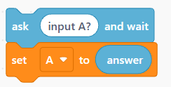
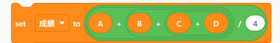
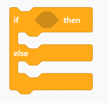
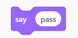

Input / Output輸入／輸出
Parallelogram 平行四邊形
Data in or a result out. 輸入 4 個數字時寫 Input a、Input b、Input c、Input d。
Data in or a result out. 輸入 4 個數字時寫 Input a、Input b、Input c、Input d。
Do a calculation. 計算：成績 = (a + b + c + d) ÷ 4。
A True / False question: 成績 ≥ 60? Two arrows go to Pass and Not pass. 兩條箭頭分別前往 Pass 與 Not pass。
Each right choice adds a step to the chart below. Start at Start and finish at End. 每選對一次，下面的流程圖就多一步。要從 Start 開始，走到 End。

ask [input a?] and waitset [a] to (answer)
Repeat for b, c and d. Use set right after each ask, or the next answer replaces it. 依序輸入並儲存 b、c、d；每次詢問後馬上 set，否則下一個 answer 會蓋掉前一個。

建立 成績 變數，把 a、b、c、d 的總和除以 4。
Add first, then divide: (a + b + c + d) ÷ 4. 一定要先全部相加，再除以 4。

Scratch has no ≥ block. Put 成績 < 60 in the hexagon: if → say [Not pass]，else → say [Pass]。
「成績 ≥ 60」和「成績 < 60」方向相反，兩種都可以；只要 True／False 的輸出對得上就好。

True branch: say [Pass]
False branch: say [Not pass]
Always show the result: a parallelogram in the flowchart, a say block in Scratch. 最後一定要有輸出。